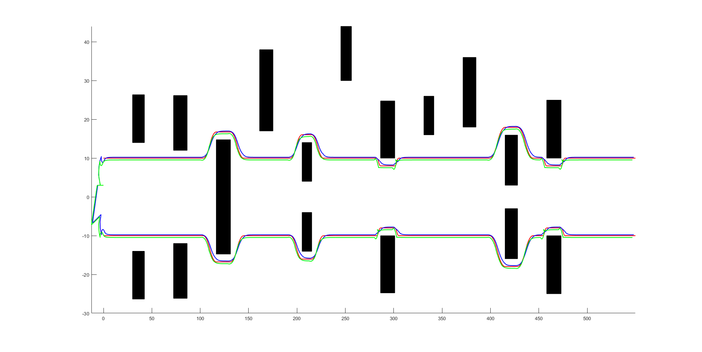

Leader-Follower Formation Control with MPC
Project Goal
This project implements a leader-follower formation control system using Model Predictive Control (MPC). The goal is to enable multiple robots to follow a designated leader while maintaining formation and avoiding collisions in dynamic environments.
Demonstration
The simulation shows how follower robots track the leader and preserve formation using centralized MPC. The system maintains real-time coordination even with sudden turns and disturbances.


Methods
- ✓ Centralized MPC formulation for leader-follower trajectory control
- ✓ Formation geometry constraints encoded into the cost function
- ✓ Inter-robot collision avoidance through distance constraints
- ✓ Real-time control loop implemented in Python using a multi-agent simulator